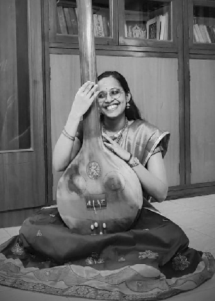

I am a performing Carnatic musician and teacher. My interest for Carnatic Music developed when I began my initial training under Late. Sri. Bhagavatula Seetharama Sharma (Kalapeetham) in 2007. After his passing in 2017, I was indeed very fortunate to have started taking Advanced Carnatic Music lessons under Sangeetha Kala Acharya Smt. Suguna Varadachari.
I am recipient of the CCRT Junior fellowship presented by the Ministry of Culture, Govt of India. In 2019, I was selected for the Young Artists’ Talent Promotion Scheme of the Tamil Nadu Iyal Isai Nataka Mandram, a unit of Directorate of Art & Culture established by the Government of Tamil Nadu. I have received the THAMBURA prize from Mylapore Fine Arts Society and won accolades in music competitions conducted by various musical institutions (Sabhas) in Chennai.
I was responsible for instantiating the SPIC MACAY chapter at IIITDM Kancheepuram and was part of the organising committee during the period 2018-2019. Currently, I am a member of Team Sunaadalahari, the musical wing of Indira Ranganathan Trust (Regd.), Chennai, where my responsibilities include content creation for social media and newspapers.
Apart from music, I am also trying my hand at point-and-shoot photography and digital sketching. Portfolio coming up soon!
